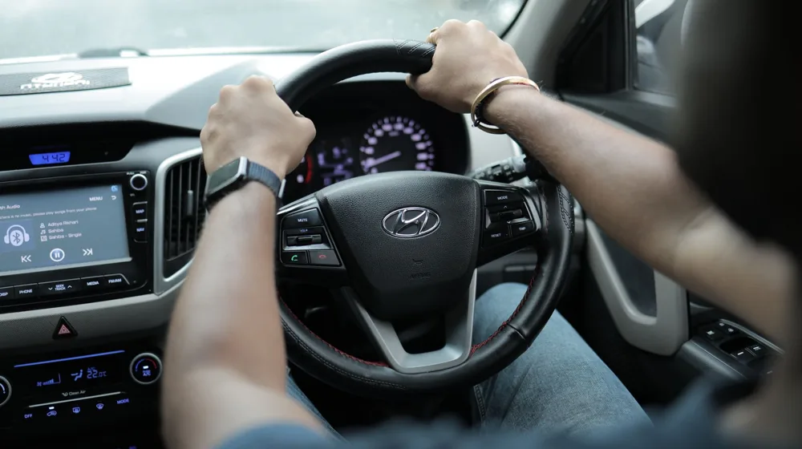

자동차보험, '이것'만 알면 호갱 탈출! 보험료 줄이는 체크리스트
사진: Sami Aksu / Pexels (무료 이미지, 출처 표기)
자동차보험 가입/갱신 전, '꼭' 확인해야 할 보장 내용

자동차보험은 의무 가입 항목인 책임보험(대인배상Ⅰ, 대물배상)과 선택 가입 항목인 임의보험으로 나뉩니다. 책임보험만으로는 사고 발생 시 보장이 충분하지 않을 수 있어, 자신의 운전 습관과 재정 상황에 맞춰 임의보험을 함께 설계하는 것이 중요합니다.
대인배상Ⅱ(무한): 사고로 타인을 사망케 하거나 다치게 했을 때 보상합니다. 의무 가입인 대인배상Ⅰ의 한도를 넘는 손해를 보상하며, 가입 시 민사상 책임을 면할 수 있어 무한 가입이 권장됩니다.
대물배상(2억 이상 권장): 사고로 타인의 차량이나 재물을 파손했을 때 보상합니다. 최근 고가 수입차량이 늘면서, 최소 가입 한도인 2천만 원으로는 부족할 수 있습니다. 2억 원 이상으로 설정하는 것이 경제적 부담을 줄이는 데 도움이 됩니다.
자기신체사고(자손) 또는 자동차상해(자상): 운전자 본인이나 동승자가 사고로 다쳤을 때 보상합니다. 자동차상해는 자기신체사고보다 보장 한도가 높고, 과실 여부와 관계없이 보험금이 지급되는 경우가 많아 더 유리합니다.
자기차량손해(자차): 내 차량이 파손되었을 때 수리비를 보상합니다. 단독 사고나 가해자가 불분명한 사고 시 유용하지만, 보험료가 비싸다는 단점이 있습니다. 차량 가액, 연식 등을 고려하여 가입 여부를 결정하세요.
무보험차 상해: 무보험 차량과의 사고로 운전자 본인이나 동승자가 다쳤을 때 보상합니다. 최대 5억 원까지 보상하며, 상대방이 책임보험만 가입했거나 뺑소니 사고일 때 유용하게 활용될 수 있습니다.
보험료 절약하는 현실적인 '할인 특약' 종류와 활용법
자동차보험료는 생각보다 다양한 방법으로 절약할 수 있습니다. 2026년 10월 기준으로 많은 보험사에서 제공하는 주요 할인 특약들을 확인하고, 나에게 해당하는 것을 찾아 보험료를 절감해 보세요. 정확한 특약 조건은 각 보험사 홈페이지에서 다시 확인하는 것이 좋습니다.
- 마일리지 특약 (주행거리 할인): 연간 주행거리가 짧을수록 보험료를 할인해 줍니다. 출퇴근 거리가 짧거나 주말에만 운전하는 경우 유리하며, 주행거리 구간에 따라 할인율이 달라집니다. 가입 시 예상 주행거리를 설정하고, 보험 기간 만료 후 실제 주행거리를 인증하여 할인받는 방식입니다.
- 블랙박스 특약: 차량에 블랙박스가 설치되어 있다면 할인받을 수 있습니다. 사진 촬영 후 제출하는 방식으로 간단하게 적용 가능하며, 도난 및 사고 시 유용한 증거 자료 확보에도 도움이 됩니다.
- 자녀 할인 특약 (베이비 특약): 특정 연령 이하의 자녀가 있거나 임신 중인 경우 할인해 줍니다. 자녀 연령 기준은 보험사마다 다르므로 확인이 필요합니다.
- 안전운전 특약 (T맵, 카카오내비 등): 내비게이션 앱을 활용한 운전 점수가 일정 기준 이상이면 할인 혜택을 제공합니다. 평소 안전운전을 하는 운전자에게 적합합니다.
- 대중교통 이용 특약: 부부가 특정 기간 동안 대중교통을 일정 금액 이상 이용했을 경우 할인해 줍니다. 대중교통 이용 내역을 증명해야 합니다.
- 첨단 안전장치 장착 특약: 차선이탈 경고 장치(LDWS), 전방 충돌 방지 장치(FCWS) 등 첨단 안전장치가 장착된 차량에 대해 할인을 제공합니다.
사고 발생 시 당황하지 않는 '긴급출동 서비스' 활용 팁
긴급출동 서비스는 예상치 못한 차량 문제 발생 시 매우 유용합니다. 대부분의 자동차보험 가입 시 선택할 수 있는 부가 서비스로, 다음과 같은 상황에서 도움을 받을 수 있습니다.
- 긴급 견인: 차량 고장이나 사고로 운행이 불가능할 때 지정된 거리까지 견인해 줍니다. 기본 견인 거리 이후에는 추가 요금이 발생할 수 있습니다.
- 비상 급유: 연료가 떨어져 운행이 불가능할 때 소량의 비상 연료를 제공합니다. 연간 제공 횟수 제한이 있을 수 있습니다.
- 배터리 충전: 배터리 방전으로 시동이 걸리지 않을 때 충전 서비스를 제공합니다.
- 타이어 교체/펑크 수리: 타이어 펑크 시 스페어타이어로 교체하거나 현장에서 간단히 수리해 줍니다.
- 잠금 해제: 차량 문이 잠겼을 때 문을 열어주는 서비스입니다.
이 서비스는 연간 이용 횟수 제한이 있는 경우가 많으므로, 가입 시 약관을 잘 확인하고 꼭 필요한 서비스 위주로 선택하는 것이 좋습니다. 일반적으로 10회까지 제공되는 경우가 많습니다. 2026년 10월 기준으로 서비스 내용과 횟수는 보험사별로 상이할 수 있으니 가입 전 확인을 권장합니다.
나에게 맞는 '자기부담금' 설정: 득과 실 따져보기
자기부담금은 사고 발생 시 보험으로 처리되는 금액 중 가입자가 직접 부담하는 일정 금액을 말합니다. 이 자기부담금을 높게 설정할수록 보험료가 할인되는 효과가 있습니다. 하지만 무턱대고 높게 설정하는 것은 바람직하지 않습니다.
자기부담금 설정 시 고려사항:
평소 운전을 조심하고 작은 접촉 사고는 자비로 처리할 의향이 있다면 자기부담금을 높게 설정하여 보험료를 아낄 수 있습니다. 반대로 운전이 미숙하거나 잦은 사고 경험이 있다면 자기부담금을 낮게 설정하여 혹시 모를 상황에 대비하는 것이 현명합니다. 자신의 운전 습관과 재정 상황을 충분히 고려하여 합리적인 금액을 선택하세요.
다이렉트 보험 vs 설계사 보험, 나에게 유리한 선택은?
자동차보험 가입 방식은 크게 다이렉트 보험과 설계사(대리점) 보험으로 나뉩니다. 각 방식은 장단점이 뚜렷하여 자신의 상황에 맞춰 선택하는 것이 중요합니다.
- 다이렉트 보험: 소비자가 인터넷이나 모바일 앱을 통해 직접 가입하는 방식입니다. 중간 유통 과정이 없어 설계사 수수료가 발생하지 않으므로, 일반적으로 설계사 보험보다 10~20%가량 저렴합니다. 여러 보험사의 상품을 직접 비교하며 가장 저렴한 보험료를 찾을 수 있다는 장점이 있습니다. 하지만 본인이 직접 보장 내용을 꼼꼼히 확인하고 가입해야 하므로, 보험 지식이 부족하거나 복잡한 상황일 경우 어려움을 느낄 수 있습니다.
- 설계사 보험: 보험 설계사나 대리점을 통해 가입하는 방식입니다. 설계사가 가입자의 상황에 맞춰 보장 내용을 설명하고 추천해 주기 때문에 보험에 대한 이해도가 낮아도 쉽게 가입할 수 있습니다. 사고 처리 시에도 설계사의 도움을 받을 수 있다는 장점이 있습니다. 그러나 설계사 수수료가 포함되어 다이렉트 보험보다 보험료가 비싸다는 단점이 있습니다.
보험 지식이 충분하고 스스로 비교 분석하는 데 능숙하다면 다이렉트 보험으로 보험료를 절약하는 것이 좋습니다. 반면, 전문가의 상담과 사고 시 도움을 받고 싶다면 설계사 보험이 더 적합할 수 있습니다. 두 가지 방식을 모두 고려하여 비교해 보는 것을 권장합니다.
자동차보험 관련 자주 묻는 질문(FAQ)
자동차보험 가입과 관련하여 독자들이 자주 묻는 질문들을 정리했습니다.
- 단기 운전자 특약이란 무엇인가요?
일시적으로 다른 사람이 내 차를 운전해야 할 때, 하루 단위로 운전자 범위를 확대하는 특약입니다. 친구나 가족이 잠깐 운전할 때 가입하면 사고 발생 시 보장을 받을 수 있습니다. 가입 기간은 보통 1일~7일 정도로 필요에 따라 선택할 수 있습니다. - 보험료 할증은 어떤 경우에 발생하나요?
주로 사고 발생 시, 특히 대인배상이나 대물배상으로 보험금을 청구했을 때 할증됩니다. 음주운전, 무면허 운전 등 중대 법규 위반 사고는 할증 폭이 더 커질 수 있습니다. 보험 가입 기간 동안 무사고를 유지하면 오히려 보험료가 할인되기도 합니다. - 공동명의 차량의 자동차보험은 어떻게 가입하나요?
공동명의 차량은 두 명 이상의 소유자가 있는 차량을 말합니다. 보험 가입 시 주된 운전자를 지정하고, 그 운전자의 경력과 연령을 기준으로 보험료가 산정됩니다. 공동명의자 중 보험료가 저렴하게 나올 수 있는 사람을 주운전자로 설정하는 것이 유리할 수 있습니다. - 보험 갱신 시기를 놓쳤다면 어떻게 해야 하나요?
보험 만기일이 지나면 책임보험 의무 위반으로 과태료가 부과될 수 있습니다. 만기 전후로 보험사에서 갱신 안내 메시지를 보내주므로, 반드시 만기일 전에 갱신하거나 새로운 보험에 가입해야 합니다. 만약 놓쳤다면 즉시 보험사에 연락하여 가입해야 합니다.
자동차보험은 나의 재산과 안전을 지키는 중요한 수단입니다. 2026년 10월 기준으로 위에서 언급된 모든 정보는 일반적인 가이드라인이며, 개별 보험사의 정책이나 정부 지침에 따라 달라질 수 있습니다. 가입 전 반드시 해당 보험사의 약관과 공식 홈페이지 내용을 꼼꼼히 확인하시길 바랍니다.
🔗 이 글도 함께 보면 좋아요: 실손보험 갱신 전 놓치면 후회할 5가지 핵심 체크리스트